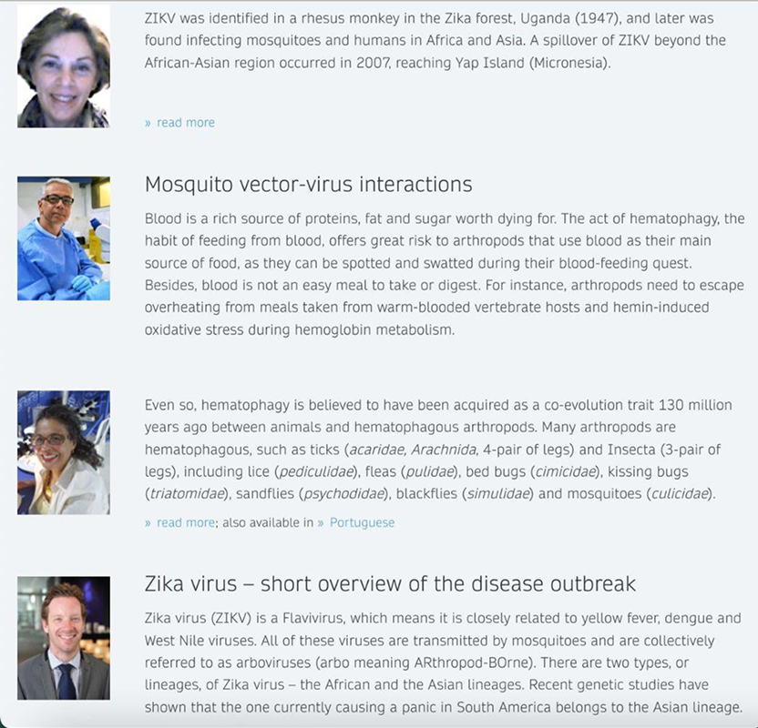
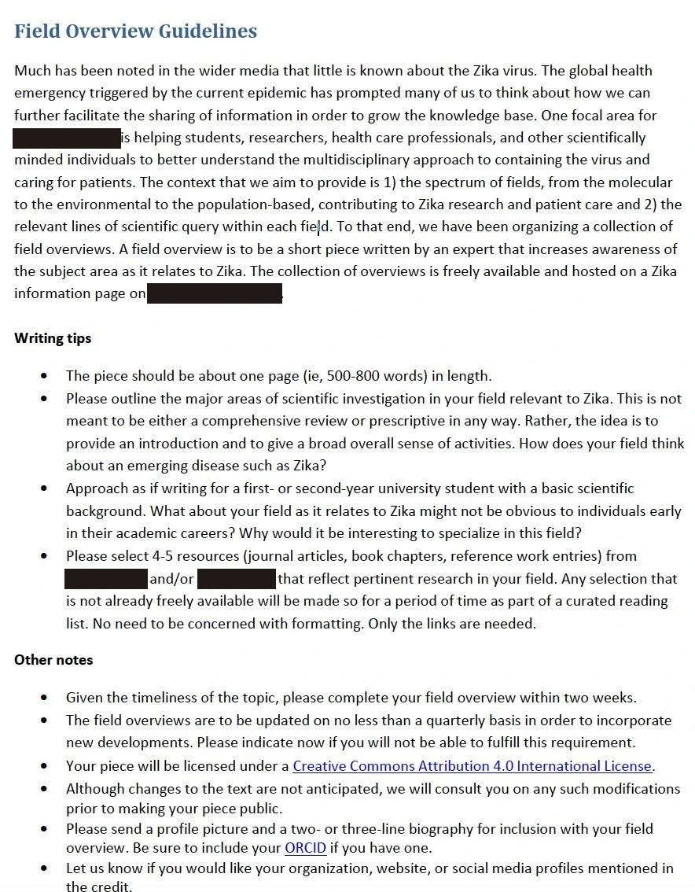
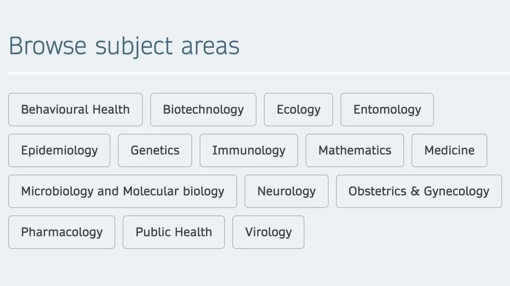

Content strategy · Web
Details generalized for confidentialityVirus-response platform

Outcome
A minimally viable site for a non-scientific audience launched within seven weeks of an industry-wide commitment to the response. The site then grew, with external contributions reaching 25 against a goal of 10. Visits came from Brazil, Canada, Germany, India, the UK, and the US within three months. The project gained executive buy-in across the business and became a model for other initiatives.
Problem
As a STEM publisher, we made a high-profile commitment to supporting the public health response to a Zika outbreak. But our core users were global scientists, and now we had to quickly serve a worried public. We had weeks to conceive, approve, and launch an experience for a non-technical audience, on a corporate site whose design was rigid and not fit for purpose.
My role
I was product owner and content strategist. Stakeholders included Communications and Marketing & Sales in New York, Heidelberg, and Berlin. External contributors came from the Americas, Europe, and Asia.
Constraints
Five factors shaped what we could build and how quickly.
| Constraint | What it meant |
|---|---|
| A growing outbreak | The first release had to be a minimally viable site |
| No time to talk with users | Research had to come from industry activity and public signals |
| A highly visible corporate site with a fixed structure | The experience had to fit existing templates and features |
| Contributors were scientists new to writing for the public | Guidelines had to focus their work without adding burden |
| Browse was the only navigation | The information architecture had to carry the experience |
Guiding principle
Define the audience before commissioning the content.
A viral post from the CDC director about the lack of research pointed to an information gap. Scanning industry activity against our media reach and community connections showed an audience nobody was serving. Instead of “the public,” I defined the target users as students exploring career choices (undergraduates and advanced high schoolers) and the content as the personal experiences of scientists working on the outbreak.
Contributors usually wrote for technical readers, so I drafted content guidelines and a style guide to help them make their work more accessible. By providing a template with repeating components, I supported a consistent experience and helped contributors get started. Because browse was the only navigation, I kept hierarchy, categories, and labels familiar so users never got lost.


(view full size)

(view full size)The user story drew authors from three continents, and translations into Portuguese and Spanish reached the people most affected.
Learning
I would pursue access to metrics before launch. The measures I could report, such as executive buy-in, contributor count, and a list of visitor countries, were real but indirect. Usage was the measure that mattered for analyzing a public-facing site. Knowing what areas of the site got the most use would have shown what to build next.